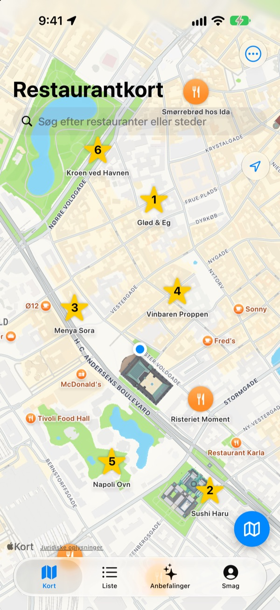
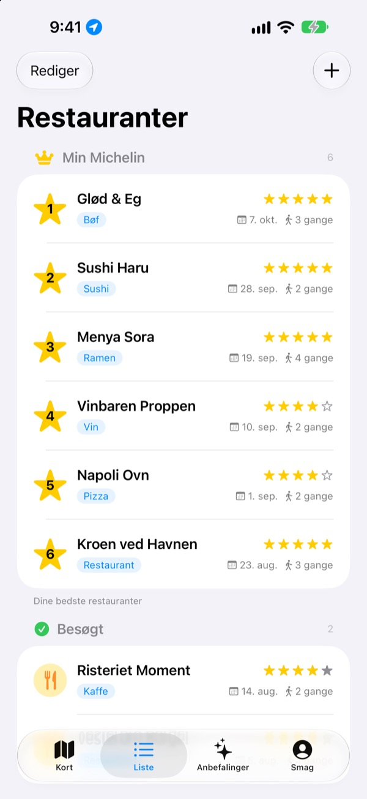
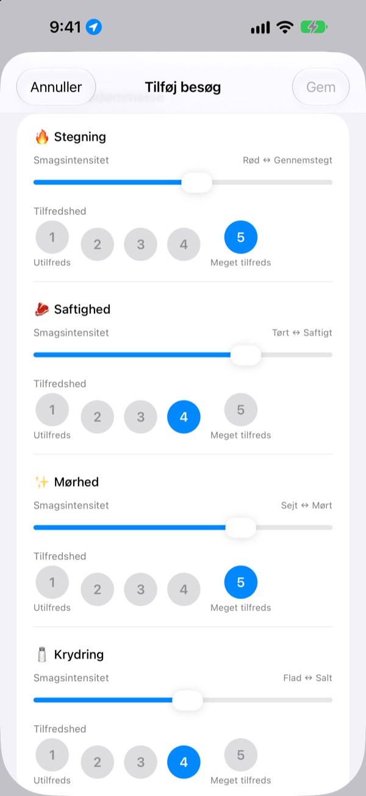
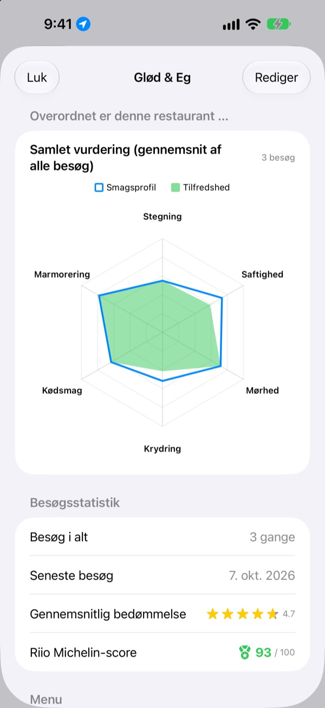

Glem aldrig igen,
hvor maden var god
Sæt nåle på kortet for de restauranter, du har besøgt og vil prøve, og skriv ved hvert besøg ned, hvad du bestilte, billeder og smagen. Når du ikke ved, hvor du skal spise, har dine egne noter svaret.
Alle funktioner er gratis. Ingen tilmelding, alt bliver på din iPhone.

Bedøm en ret
Vælg en type mad, og indstil hvor kraftig hver smag var, og hvor godt du kunne lide den. Samme kriterier og samme udregning som et besøg i appen.
Det var lækkert, men hvad bestilte jeg?
Du husker, at du var vild med stedet, men navnet er uklart, og hvad du bestilte, eller om suppen var for salt, aner du ikke. Så du søger igen og læser fremmedes anmeldelser. Insaeng gemmer det, du selv har smagt, på et kort, så dit næste valg bygger på din egen erfaring.
Besøgt, Vil derhen og din egen Michelin
Søg på kortet, eller tryk på et sted i nærheden, så er det gemt. Hold steder, du har været, adskilt fra dem, du vil prøve, og ranger dine seks favoritter fra 1 til 6.
Når nogen spørger efter et godt sted, viser du bare listen.

Spørgsmål der passer til retten
Hvor kraftig en smag var, fx styrke eller salt, sætter du med en skyder, og hvor godt du kunne lide den, bedømmer du for sig fra 1 til 5. Bøf handler om stegning og saftighed, sushi om ris og fisk, ramen om bouillon og nudler.
Hvert besøg gemmer også ret, billeder, stjerner og noter.

Hvor det er værd at vende tilbage, kan ses i tal
Efter flere besøg viser hver restaurant en samlet vurdering med gennemsnittet af alle besøg og en Riio Michelin-score ud af 100, der kombinerer stjerner og tilfredshed.
Når du forlader en gemt restaurant, kommer der lidt senere en påmindelse om at skrive besøget ned.

Kom i gang i tre trin
- 1
Gem en restaurant
Søg på kortet, eller tryk på et sted i nærheden.
- 2
Skriv besøget ned
Ret, billeder, stjerner og smag. Smagsbedømmelsen er frivillig.
- 3
Vælg det næste sted
Tjek din top 6 og scorer, og find vej med Apple Kort, Kakao Map eller Naver Map.
Det bedømmer du for hver type mad
- 🍽️ Generelt
- Styrke, Fylde, Sødme, Salthed, Fedme, Naturlig smag
- 🥩 Bøf
- Stegning, Saftighed, Mørhed, Krydring, Kødsmag, Marmorering
- 🍣 Sushi
- Shari (ris), Neta (fisk), Wasabi, Balance, Formning, Temperatur
- 🍜 Ramen
- Bouillon, Nudler, Chashu, Fyld, Temperatur, Balance
- 🍕 Pizza
- Dej, Sauce, Ost, Stegning, Fyld, Balance
- 🍷 Vin
- Fylde, Tannin, Syre, Aroma, Eftersmag, Balance
- ☕ Kaffe
- Syrlighed, Fylde, Aroma, Eftersmag, Sødme, Balance
Al anden mad bedømmes med de generelle kriterier i første række. Du kan også lave dine egne kategorier.
Ofte stillede spørgsmål
Hvordan tilføjer jeg en restaurant?
Skriv restaurantens navn i søgefeltet øverst på kortet, og tryk på „Føj til mine restauranter“ i resultaterne. Du kan også tilføje den direkte ved at trykke på et sted i nærheden, som vises på kortet. Dukker stedet ikke op i søgningen, kan du selv tilføje det på din nuværende placering eller et sted, du vælger på kortet.
Hvad er Besøgt, Vil derhen og Top 6?
Besøgt – restauranter, du allerede har været på. Her kan du registrere dine besøg. Vil derhen – restauranter, du gerne vil prøve en dag. Når du har været der, skifter du den til Besøgt på restaurantens detaljeside. Top 6 (Min Michelin) – dine seks yndlingsrestauranter, rangeret fra nr. 1 til nr. 6. En restaurant på listen Vil derhen kan ikke sættes i Top 6.
Skal jeg bedømme smagen?
Nej, det er frivilligt. Bedømmer du, indgår smagsintensitet og tilfredshed i restaurantens samlede vurdering og tæller med i Riio Michelin-scoren.
Hvornår kommer notifikationen „Hvordan var dit besøg i dag?“
Når du har opholdt dig mere end 5 minutter ved en gemt restaurant og går igen, får du notifikationen ca. 40 minutter senere. Funktionen kræver, at placering er sat til „Altid“, og at notifikationer er slået til. Vil du ikke have notifikationen, kan du slå notifikationer fra under Indstillinger > Apps > Insaeng eller ændre placering til „Når appen er i brug“. Placeringen tjekkes kun på enheden. Dine bevægelser gemmes ikke og sendes ingen steder hen.
Kan jeg bruge appen uden adgang til placering?
Ja. Du kan selv vælge et sted på kortet for at tilføje en restaurant og registrere besøg. Det er kun visning af din nuværende placering og påmindelsen efter besøget, der ikke virker.
Søgningen giver ingen resultater
Stedsøgning kræver internetforbindelse. Prøv at søge igen med et andet navn eller et kortere søgeord. Finder du det stadig ikke, kan du vælge stedet på kortet og tilføje det selv.
Hvor gemmes mine data? Synkroniseres de med andre enheder?
Restauranter, besøg og billeder gemmes kun på denne iPhone. Den nuværende version understøtter ikke synkronisering med andre enheder, og iCloud-sikkerhedskopiering og -gendannelse i indstillingerne virker endnu ikke. Appens data er dog med i en fuld sikkerhedskopi af din iPhone (iCloud-sikkerhedskopi eller sikkerhedskopi på computer).
Jeg vil slette alt
Tryk på „Slet alle data“ i indstillingerne på kortskærmen, så slettes restauranter og besøg. Det kan ikke fortrydes. Vil du også fjerne alle billeder helt, skal du slette appen.
Har jeg stadig mine data, hvis jeg sletter og geninstallerer appen?
Nej. Dine data gemmes kun på enheden og forsvinder derfor sammen med appen. Tænk dig om, før du sletter den.
Er det virkelig helt gratis?
Ja. Alle funktioner er gratis, uden reklamer og uden konto. “Støt udvikleren” i indstillingerne er helt frivilligt og låser ikke noget op.
Fandt du ikke svaret? Send os en besked direkte fra appen under Indstillinger > Support, eller skriv til mizzking75@gmail.com. Skriv gerne appversion, iPhone-model, og hvad du gjorde på hvilken skærm – så kan vi hjælpe hurtigere.